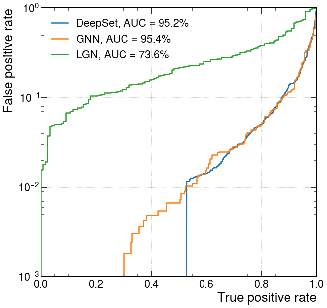

Lorentz Network
Contents
Lorentz Network#
Finally we will look at Lorentz-equivariant networks using PyTorch. The architecture is based on the following paper: Lorentz Group Network
import torch
device = torch.device("cuda:0" if torch.cuda.is_available() else "cpu")
from tqdm.notebook import tqdm
import numpy as np
import yaml
with open('definitions_lgn.yml') as file:
# The FullLoader parameter handles the conversion from YAML
# scalar values to Python the dictionary format
definitions = yaml.load(file, Loader=yaml.FullLoader)
features = definitions['features']
spectators = definitions['spectators']
labels = definitions['labels']
nfeatures = definitions['nfeatures']
nspectators = definitions['nspectators']
nlabels = definitions['nlabels']
ntracks = definitions['ntracks']
Dataset loader#
Here we have to define the dataset loader.
from LGNDataset import LGNDataset
train_files = ['root://eospublic.cern.ch//eos/opendata/cms/datascience/HiggsToBBNtupleProducerTool/HiggsToBBNTuple_HiggsToBB_QCD_RunII_13TeV_MC/train/ntuple_merged_11.root']
test_files = ['root://eospublic.cern.ch//eos/opendata/cms/datascience/HiggsToBBNtupleProducerTool/HiggsToBBNTuple_HiggsToBB_QCD_RunII_13TeV_MC/test/ntuple_merged_1.root']
train_generator = LGNDataset(features, labels, spectators, n_events=2000, npad = ntracks,
file_names=train_files)
train_generator.process()
test_generator = LGNDataset(features, labels, spectators, n_events=1000, npad = ntracks,
file_names=test_files)
test_generator.process()
Plugin No such file or directory loading sec.protocol libXrdSeckrb5-5.so
/home/runner/work/iaifi-summer-school/iaifi-summer-school/book/LGNDataset.py:109: UserWarning: Creating a tensor from a list of numpy.ndarrays is extremely slow. Please consider converting the list to a single numpy.ndarray with numpy.array() before converting to a tensor. (Triggered internally at ../torch/csrc/utils/tensor_new.cpp:204.)
x = torch.tensor(fourvec, dtype=torch.float).T
Lorentz Group Networks#
The operations in Lorentz Group Networks are constructed from the Clebsch-Gordon coefficients such that they are Lorentz-equivariant. In addition, they are also constructed to be permutation invariant, in a similar manner to the Deep Sets and Interaction Network models we have just seen.
We will define a DeepSets model that will take as input the 4-momentum for up to 60 tracks.
import logging
from lgn.cg_lib import CGModule, ZonalFunctionsRel, ZonalFunctions, normsq4
from lgn.g_lib import GTau
from lgn.models.lgn_cg import LGNCG
from lgn.nn import RadialFilters
from lgn.nn import InputLinear, MixReps
from lgn.nn import OutputLinear, OutputPMLP, GetScalarsAtom
from lgn.nn import NoLayer
#ntracks = 60
inputs = 48
hidden1 = 64
hidden2 = 32
hidden3 = 16
classify1 = 50
outputs = 2
class LGNModel(CGModule):
"""
Basic LGN Network. Taken from https://github.com/fizisist/LorentzGroupNetwork
Parameters
----------
maxdim : :obj:`int` of :class:`list` of :class:`int`
Maximum weight in the output of CG products. (Expanded to list of
length :obj:`num_cg_levels`)
max_zf : :class:`int` of :class:`list` of :class:`int`
Maximum weight in the output of the spherical harmonics (Expanded to list of
length :obj:`num_cg_levels`)
num_cg_levels : :class:`int`
Number of cg levels to use.
num_channels : :class:`int` of :class:`list` of :class:`int`
Number of channels that the output of each CG are mixed to (Expanded to list of
length :obj:`num_cg_levels`)
num_species : :class:`int`
Number of species of atoms included in the input dataset.
device : :class:`torch.device`
Device to initialize the level to
dtype : :class:`torch.torch.dtype`
Data type to initialize the level to level to
cg_dict : :class:`CGDict <lgn.cg_lib.CGDict>`
Clebsch-gordan dictionary object.
"""
def __init__(self, maxdim, max_zf, num_cg_levels, num_channels,
cutoff_type, hard_cut_rad, soft_cut_rad, soft_cut_width,
weight_init, level_gain, num_basis_fn,
top, input, num_mpnn_layers, activation='leakyrelu', pmu_in=False, add_beams=True,
scale=1, full_scalars=False, mlp=True, mlp_depth=None, mlp_width=None,
device=torch.device('cpu'), dtype=None, cg_dict=None):
logging.info('Initializing network!')
level_gain = expand_var_list(level_gain, num_cg_levels)
hard_cut_rad = expand_var_list(hard_cut_rad, num_cg_levels)
soft_cut_rad = expand_var_list(soft_cut_rad, num_cg_levels)
soft_cut_width = expand_var_list(soft_cut_width, num_cg_levels)
maxdim = expand_var_list(maxdim, num_cg_levels)
max_zf = expand_var_list(max_zf, num_cg_levels)
num_channels = expand_var_list(num_channels, num_cg_levels + 1)
logging.info('hard_cut_rad: {}'.format(hard_cut_rad))
logging.info('soft_cut_rad: {}'.format(soft_cut_rad))
logging.info('soft_cut_width: {}'.format(soft_cut_width))
logging.info('maxdim: {}'.format(maxdim))
logging.info('max_zf: {}'.format(max_zf))
logging.info('num_channels: {}'.format(num_channels))
super().__init__(maxdim=max(maxdim + max_zf), device=device, dtype=dtype, cg_dict=cg_dict)
device, dtype, cg_dict = self.device, self.dtype, self.cg_dict
logging.info('CGdict maxdim: {}'.format(cg_dict.maxdim))
self.num_cg_levels = num_cg_levels
self.num_channels = num_channels
self.scale = scale
self.full_scalars = full_scalars
self.pmu_in = pmu_in
# Set up spherical harmonics
if pmu_in:
self.zonal_fns_in = ZonalFunctions(max(max_zf), device=device, dtype=dtype, cg_dict=cg_dict)
self.zonal_fns = ZonalFunctionsRel(max(max_zf), device=device, dtype=dtype, cg_dict=cg_dict)
# Set up position functions, now independent of spherical harmonics
self.rad_funcs = RadialFilters(max_zf, num_basis_fn, num_channels, num_cg_levels, device=self.device, dtype=self.dtype)
tau_pos = self.rad_funcs.tau
if num_cg_levels:
if add_beams:
num_scalars_in = 2
else:
num_scalars_in = 1
else:
num_scalars_in = 202 # the second number should match the number of atoms (including beams)
num_scalars_out = num_channels[0]
if not pmu_in:
self.input_func_atom = InputLinear(num_scalars_in, num_scalars_out,
device=self.device, dtype=self.dtype)
else:
self.input_func_atom = MixReps(GTau({**{(0,0): num_scalars_in},**{(l,l): 1 for l in range(1, max_zf[0] + 1)}}),
GTau({(l,l): num_scalars_out for l in range(max_zf[0] + 1)}),
device=self.device, dtype=self.dtype)
tau_in_atom = self.input_func_atom.tau
self.lgn_cg = LGNCG(maxdim, max_zf, tau_in_atom,
tau_pos, num_cg_levels, num_channels,
level_gain, weight_init, cutoff_type,
hard_cut_rad, soft_cut_rad, soft_cut_width,
mlp=mlp, mlp_depth=mlp_depth, mlp_width=mlp_width,
activation=activation, device=self.device, dtype=self.dtype, cg_dict=self.cg_dict)
tau_cg_levels_atom = self.lgn_cg.tau_levels_atom
self.get_scalars_atom = GetScalarsAtom(tau_cg_levels_atom,
device=self.device, dtype=self.dtype)
num_scalars_atom = self.get_scalars_atom.num_scalars
if top.lower().startswith('lin'):
self.output_layer_atom = OutputLinear(num_scalars_atom, bias=True,
device=self.device, dtype=self.dtype)
elif top.lower().startswith('pmlp'):
self.output_layer_atom = OutputPMLP(num_scalars_atom, num_mixed=mlp_width,
device=self.device, dtype=self.dtype)
logging.info('Model initialized. Number of parameters: {}'.format(sum(p.nelement() for p in self.parameters())))
def forward(self, data, covariance_test=False):
"""
Runs a forward pass of the network.
Parameters
----------
data : :obj:`dict`
Dictionary of data to pass to the network.
covariance_test : :obj:`bool`, optional
If true, returns all of the atom-level representations twice.
Returns
-------
prediction : :obj:`torch.Tensor`
The output of the layer
"""
# Get and prepare the data
atom_scalars, atom_mask, edge_mask, atom_ps = self.prepare_input(data, self.num_cg_levels)
# Calculate spherical harmonics and radial functions
if self.pmu_in:
zonal_functions_in, _, _ = self.zonal_fns_in(atom_ps)
zonal_functions_in[(0, 0)] = torch.stack([atom_scalars.unsqueeze(-1),torch.zeros_like(atom_scalars.unsqueeze(-1))])
zonal_functions, norms, sq_norms = self.zonal_fns(atom_ps, atom_ps)
# Prepare the input reps for both the atom and edge network
if self.num_cg_levels > 0:
rad_func_levels = self.rad_funcs(norms, edge_mask * (norms != 0).byte())
if not self.pmu_in:
atom_reps_in = self.input_func_atom(atom_scalars, atom_mask)
else:
atom_reps_in = self.input_func_atom(zonal_functions_in)
else:
rad_func_levels = []
atom_reps_in = self.input_func_atom(atom_scalars, atom_mask)
# edge_net_in = self.input_func_edge(atom_scalars, atom_mask, edge_scalars, edge_mask, norms, sq_norms)
# Clebsch-Gordan layers central to the network
atoms_all = self.lgn_cg(atom_reps_in, atom_mask, rad_func_levels, zonal_functions)
# Construct scalars for network output
atom_scalars = self.get_scalars_atom(atoms_all)
# edge_scalars = self.get_scalars_edge(edges_all)
# Prediction in this case will depend only on the atom_scalars. Can make
# it more general here.
prediction = self.output_layer_atom(atom_scalars, atom_mask)
# Covariance test
if covariance_test:
return prediction, atoms_all
else:
return prediction
def prepare_input(self, data, cg_levels=True):
"""
Extracts input from data class
Parameters
----------
data : ?????
Information on the state of the system.
Returns
-------
atom_scalars : :obj:`torch.Tensor`
Tensor of scalars for each atom.
atom_mask : :obj:`torch.Tensor`
Mask used for batching data.
atom_ps: :obj:`torch.Tensor`
Positions of the atoms
edge_mask: :obj:`torch.Tensor`
Mask used for batching data.
"""
device, dtype = self.device, self.dtype
atom_ps = data['Pmu'].to(device, dtype) * self.scale
data['Pmu'].requires_grad_(True)
atom_mask = data['atom_mask'].to(device, torch.uint8)
edge_mask = data['edge_mask'].to(device, torch.uint8)
scalars = torch.ones_like(atom_ps[:, :, 0]).unsqueeze(-1)
scalars = normsq4(atom_ps).abs().sqrt().unsqueeze(-1)
if 'scalars' in data.keys():
scalars = torch.cat([scalars, data['scalars'].to(device, dtype)], dim=-1)
if not cg_levels:
scalars = torch.stack(tuple(scalars for _ in range(scalars.shape[-1])), -2)
return scalars, atom_mask, edge_mask, atom_ps
def expand_var_list(var, num_cg_levels):
if type(var) is list:
var_list = var + (num_cg_levels - len(var)) * [var[-1]]
elif type(var) in [float, int]:
var_list = [var] * num_cg_levels
else:
raise ValueError('Incorrect type {}'.format(type(var)))
return var_list
model = LGNModel(maxdim=3,
max_zf=1,
num_cg_levels=3,
num_channels=[2,4,4,2],
cutoff_type=['learn'],
hard_cut_rad=np.inf,
soft_cut_rad=np.inf,
soft_cut_width=np.inf,
weight_init='randn',
level_gain=[1.],
num_basis_fn=10,
top='linear',
input='linear',
num_mpnn_layers=1,
mlp=True,
mlp_width=2,
mlp_depth=3,
pmu_in=False,
add_beams=False,
device=device)
optimizer = torch.optim.Adam(model.parameters(), lr = 1e-1)
print(model)
print('----------')
print({l:model.state_dict()[l].shape for l in model.state_dict()})
---------------------------------------------------------------------------
ModuleNotFoundError Traceback (most recent call last)
/tmp/ipykernel_4864/3007852605.py in <module>
1 import logging
2
----> 3 from lgn.cg_lib import CGModule, ZonalFunctionsRel, ZonalFunctions, normsq4
4 from lgn.g_lib import GTau
5
ModuleNotFoundError: No module named 'lgn'
Define training loop#
@torch.no_grad()
def test(model, loader, total, batch_size, leave=False):
model.eval()
xentropy = nn.CrossEntropyLoss(reduction='mean')
sum_loss = 0.
t = tqdm(enumerate(loader), total=total/batch_size, leave=leave)
for i, data in t:
#x = data['Pmu'].to(device)
y = data['output'].to(device)
y = torch.argmax(y, dim=1)
data['atom_mask'] = torch.ones(data['Pmu'].size()[:2], dtype=torch.uint8)
data['atom_mask'][data['Pmu'][:,:,0]==0] = 0
data['edge_mask'] = torch.ones(data['Pmu'].size(dim=1), dtype=torch.uint8)
batch_output = model(data)
batch_loss_item = xentropy(batch_output, y).item()
sum_loss += batch_loss_item
t.set_description("loss = %.5f" % (batch_loss_item))
t.refresh() # to show immediately the update
return sum_loss/(i+1)
def train(model, optimizer, loader, total, batch_size, leave=False):
model.train()
xentropy = nn.CrossEntropyLoss(reduction='mean')
sum_loss = 0.
t = tqdm(enumerate(loader), total=total/batch_size, leave=leave)
for i, data in t:
#x = data['Pmu'].to(device)
y = data['output'].to(device)
y = torch.argmax(y, dim=1)
optimizer.zero_grad()
data['atom_mask'] = torch.ones(data['Pmu'].size()[:2], dtype=torch.uint8)
data['atom_mask'][data['Pmu'][:,:,0]==0] = 0
data['edge_mask'] = torch.ones(data['Pmu'].size(dim=1), dtype=torch.uint8)
batch_output = model(data)
batch_loss = xentropy(batch_output, y)
batch_loss.backward()
batch_loss_item = batch_loss.item()
t.set_description("loss = %.5f" % batch_loss_item)
t.refresh() # to show immediately the update
sum_loss += batch_loss_item
optimizer.step()
return sum_loss/(i+1)
Define training, validation, testing data generators#
from torch.utils.data import ConcatDataset
from LGNDataset import PmuDataset
train_generator_data = {c:ConcatDataset(train_generator.datas[c]) for c in train_generator.datas}
test_generator_data = {c:ConcatDataset(test_generator.datas[c]) for c in test_generator.datas}
train_generator_data = PmuDataset(x=train_generator_data['x'],
y=train_generator_data['y'])
test_generator_data = PmuDataset(x=test_generator_data['x'],
y=test_generator_data['y'])
from torch.utils.data import random_split, DataLoader
torch.manual_seed(0)
valid_frac = 0.20
train_length = len(train_generator_data)
valid_num = int(valid_frac*train_length)
batch_size = 32
train_dataset, valid_dataset = random_split(train_generator_data, [train_length-valid_num,valid_num])
def collate(items):
l = sum(items, [])
return Batch.from_data_list(l)
train_loader = DataLoader(train_dataset, batch_size=batch_size, shuffle=True)
#train_loader.collate_fn = collate
valid_loader = DataLoader(valid_dataset, batch_size=batch_size, shuffle=False)
#valid_loader.collate_fn = collate
test_loader = DataLoader(test_generator_data, batch_size=batch_size, shuffle=False)
#test_loader.collate_fn = collate
train_samples = len(train_dataset)
valid_samples = len(valid_dataset)
test_samples = len(test_generator_data)
print(train_length)
print(train_samples)
print(valid_samples)
print(test_samples)
1881
1505
376
949
Train#
import torch.nn as nn
import os.path as osp
n_epochs = 2
stale_epochs = 0
best_valid_loss = 99999
patience = 5
t = tqdm(range(0, n_epochs))
for epoch in t:
loss = train(model, optimizer, train_loader, train_samples, batch_size, leave=bool(epoch==n_epochs-1))
valid_loss = test(model, valid_loader, valid_samples, batch_size, leave=bool(epoch==n_epochs-1))
print('Epoch: {:02d}, Training Loss: {:.4f}'.format(epoch, loss))
print(' Validation Loss: {:.4f}'.format(valid_loss))
if valid_loss < best_valid_loss:
best_valid_loss = valid_loss
modpath = osp.join('lgn_best.pth')
print('New best model saved to:',modpath)
torch.save(model.state_dict(),modpath)
stale_epochs = 0
else:
print('Stale epoch')
stale_epochs += 1
if stale_epochs >= patience:
print('Early stopping after %i stale epochs'%patience)
break
/Users/drankin/Documents/iaifi-summer-school/book/lgn/nn/position_levels.py:140: UserWarning: where received a uint8 condition tensor. This behavior is deprecated and will be removed in a future version of PyTorch. Use a boolean condition instead. (Triggered internally at /Users/distiller/project/conda/conda-bld/pytorch_1646756029501/work/aten/src/ATen/native/TensorCompare.cpp:333.)
rad_trig = torch.where(edge_mask, self.b * (torch.ones_like(self.b) + (self.c * norms).pow(2)).pow(-1) + self.a, self.zero).unsqueeze(-1)
Epoch: 00, Training Loss: 723258351979158175744.0000
Validation Loss: 431602350075780202496.0000
Stale epoch
Epoch: 01, Training Loss: 19120506426929730027520.0000
Validation Loss: 340237936768752877568.0000
Stale epoch
Evaluate on testing data#
model.eval()
t = tqdm(enumerate(test_loader),total=test_samples/batch_size)
y_test = []
y_predict = []
for i,data in t:
#x = data['Pmu'].to(device)
y = data['output'].to(device)
data['atom_mask'] = torch.ones(data['Pmu'].size()[:2], dtype=torch.uint8)
data['atom_mask'][data['Pmu'][:,:,0]==0] = 0
data['edge_mask'] = torch.ones(data['Pmu'].size(dim=1), dtype=torch.uint8)
batch_output = model(data)
y_predict.append(batch_output.detach().cpu().numpy())
y_test.append(y.cpu().numpy())
y_test = np.concatenate(y_test)
y_predict = np.concatenate(y_predict)
from sklearn.metrics import roc_curve, auc
import matplotlib.pyplot as plt
import mplhep as hep
plt.style.use(hep.style.ROOT)
# create ROC curves
fpr_lgn, tpr_lgn, threshold_lgn = roc_curve(y_test[:,1], y_predict[:,1])
with open('lgn_roc.npy', 'wb') as f:
np.save(f, fpr_lgn)
np.save(f, tpr_lgn)
np.save(f, threshold_lgn)
with open('gnn_roc.npy', 'rb') as f:
fpr_gnn = np.load(f)
tpr_gnn = np.load(f)
threshold_gnn = np.load(f)
with open('deepset_roc.npy', 'rb') as f:
fpr_deepset = np.load(f)
tpr_deepset = np.load(f)
threshold_deepset = np.load(f)
# plot ROC curves
plt.figure()
plt.plot(tpr_deepset, fpr_deepset, lw=2.5, label="DeepSet, AUC = {:.1f}%".format(auc(fpr_deepset,tpr_deepset)*100))
plt.plot(tpr_gnn, fpr_gnn, lw=2.5, label="GNN, AUC = {:.1f}%".format(auc(fpr_gnn,tpr_gnn)*100))
plt.plot(tpr_lgn, fpr_lgn, lw=2.5, label="LGN, AUC = {:.1f}%".format(auc(fpr_lgn,tpr_lgn)*100))
plt.xlabel(r'True positive rate')
plt.ylabel(r'False positive rate')
plt.semilogy()
plt.ylim(0.001, 1)
plt.xlim(0, 1)
plt.grid(True)
plt.legend(loc='upper left')
plt.show()
